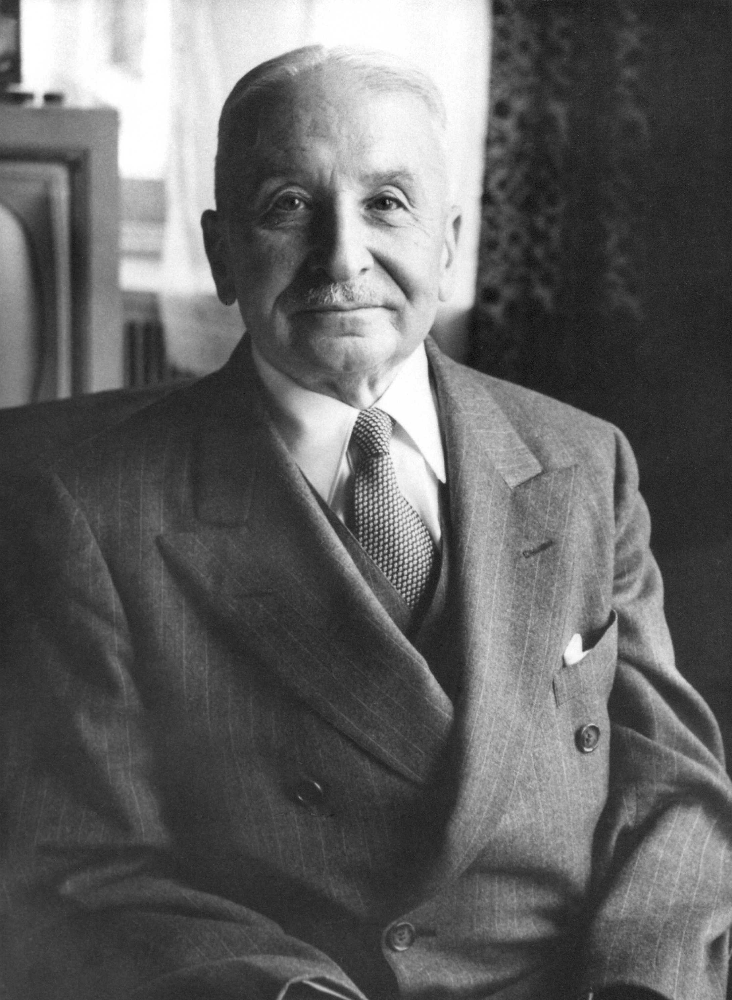

Коммунизм
Что из себя представляет
Коммунизм (от лат. commūnis «общий») — теоретический общественный и экономический строй, основанный на общественной собственности на средства производства, чем обеспечивается социальное равенство. Также «коммунизмом» часто называют крайне левую идеологию, которая провозглашает своей целью построение коммунистического общества. В этом контексте объединяются различные школы и течения, которые включают марксизм, социальный анархизм (анархо-коммунизм), а также близкие к ним политические идеологии.
На практике такого строя никогда не существовало, однако термин «коммунистическое государство» применялся западной прессой к СССР и странам, объявившим себя или считавшимся социалистическими. Согласно работам основоположников марксизма, коммунизм предполагает наличие высокоразвитых производительных сил, отсутствие государства, денег, без деления общества на социальные классы. Предполагается, что всё это станет возможным при распространении общественной собственности на средства производства. Господствует принцип: «Каждый — по способностям, каждому — по потребностям!»
По определению В. И. Ленина, социализм и высшая фаза коммунизм выступают «... ступенями экономической зрелости коммунизма». Различия между двумя фазами проявляются, прежде всего, в различиях уровней развития общественного производства и не сводятся только к способу распределения. Однако это — различия в рамках единой общественно-экономической формации — коммунистической.
Коммунизм отличается от социализма, прежде всего зрелостью, развитостью экономической основы новой общественно-экономической формации — производительных сил и производственных отношений. Это «... социалистическое общество в развернутом виде...», «... высшая ступень социализма».
Общие черты и различия двух фаз коммунистической формации сводятся к следующему. На высшей фазе коммунизм получат дальнейшее развитие некоторые закономерности, существенные признаки социализма, характерные для коммунистической формации в целом. Это: общественная собственность на средства производства, отношения сотрудничества и взаимопомощи, сознательная дисциплина труда, плановое ведение народного хозяйства подчинение экономического и культурного прогресса общества целям достижения полного благосостояния и всестороннего развития всех его членов, социальное единство общества на базе общности коренных интересов трудящихся, марксистско-ленинской идеологии, управление общественными делами, осуществляемое на основе научного познания экономических законов и принципов коммунистического мировоззрения. Сохранятся и упрочатся такие исторические завоевания социализма, как всеобщность труда, свобода от эксплуатации, от всех форм социального порабощения и национального гнета.
Другие существенные черты социализма, связанные с особенностями развития новой формации ещё не на своей собственной основе, постепенно отпадут при полном коммунизме или в процессе его становления.
Две социалистических формы общественной собственности — государственная и кооперативная разовьются, преобразуются в единую коммунистическую, от распределения по труду общество перейдёт к распределению по потребностям, политические и правовые элементы надстройки, которые обеспечивают функционирование социалистического базиса, эволюцию общества к коммунизму станут ненужными и исчезнут.
При определённых материальных и духовных предпосылках, в процессе длительной преобразовательной работы постепенно будут полностью преодолены пережитки в экономике и сознании людей, доставшиеся в наследство от капитализма. Новое общество приобретёт и ряд свойств, характерных признаков, прежде всего в системе экономических отношений, которых не может быть при социализме. К ним относятся изобилие материальных и духовных благ, полное социальное равенство, всестороннее развитие работников производства, общественное самоуправление, труд на общество, как первая жизненная потребность членов общества, распределение по потребностям.
Главное материальное условие реализации принципов коммунизма составляет высшая по сравнению с капитализмом производительность общественного труда. Решающими факторами достижения соответствующей коммунизму производительности труда выступают повышение научно-технической оснащённости труда на основе гигантского роста производительных сил, приводящего к качественно новой ступени в их развитии.
Коммуна – это модель правления, характеризующаяся ранней стадией коммунизма, которую обычно отстаивают коммунисты, революционные социалисты и анархисты. Модель часто характеризуется как местная и прозрачная организация, состоящая из делегатов, связанных мандатами. Эти делегаты в любой момент могут быть отозваны со своих постов. Сторонники рассматривают право отзыва как особенно важную защиту от коррупции и безответственности среди представителей. Высшая стадия коммунизма характеризуются отмиранием государства.
Критика
Экономист-либертарианец Людвиг фон Мизес в своей книге «Социализм: Экономический и социологический анализ» утверждал, что замена рынка планом изначально невозможна потому, что последний исходит из ошибочного представления, что цены являются продуктом капитализма, и потому их можно устранить, не нарушив систему эффективного распределения ресурсов, однако товар и цена слишком сильно взаимосвязаны, а число принимаемых решений слишком велико, чтобы расчёты на перспективу стали возможными: только рынок может справиться с множеством проблем, связанных с распределением ресурсов и капиталовложений в процессе производства.
Также Людвигом фон Мизесом и Фридрихом Хайеком была рассмотрена проблема рационального распределения ресурсов в экономике. В рыночной экономике эта проблема решается при помощи механизма спроса и предложения, при котором люди имеют возможность решать, как именно будут распределяться товары или услуги при помощи своей готовности отдавать деньги за них. Таким образом, цена товара содержит всю необходимую информацию о балансе спроса и предложения, что позволяет корректировать возникающие избытки и дефициты.
Мизес и Хайек утверждают, что этот механизм является единственно возможным, и что из-за отсутствия информации, получаемой при помощи рыночных цен, социализм лишён возможности рационального распределения ресурсов. Те, кто поддерживают этот аргумент, считают, что он является доказательством неработоспособности плановой экономики.
Людвиг фон Мизес обосновывал идею, что дефицит является непременной особенностью любой социалистической экономики, так как если все средства производства принадлежат государству, не существует способа получить рациональные цены для средств производства, потому что цены на них, в отличие от цен на потребительские товары, являются просто характеристикой внутренней передачи этих средств, а не результатом сознательного обмена. Таким образом, оценка средств производства становится невозможной, а значит, планирующий орган будет лишен возможности рационального распределения ресурсов.